Example Code
Now it is time to give you some example code to work with. We will be using a swerve drive program as our example program. This will allow you to move your virtual robot around a virtual field. Let’s take a look at how all of this fits together:
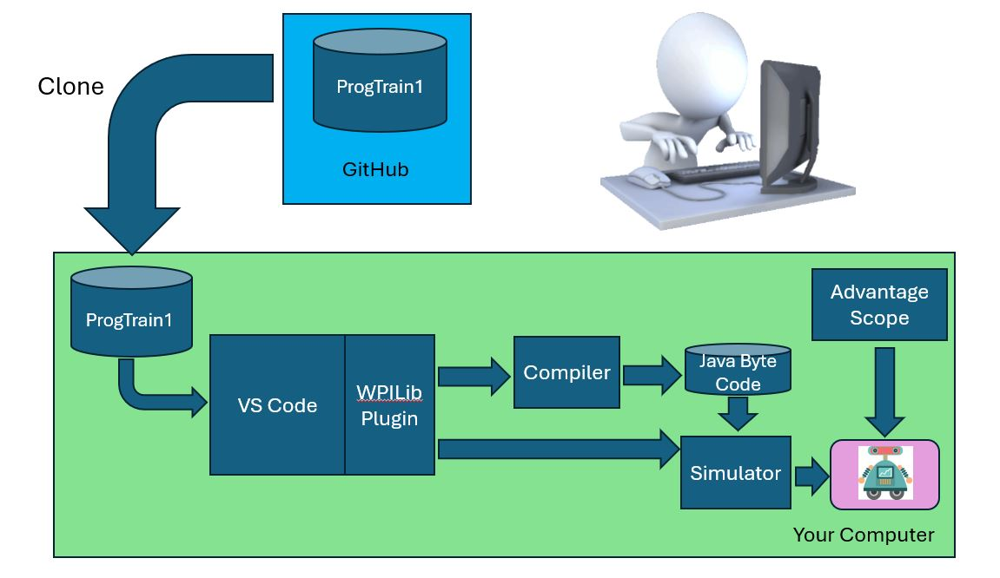Our first step is to clone the current Github repository to your local machine. Then we will compile it to generate the java byte code for the simulator. Then we will fire up the simulator and fire up Advantage scope. And finally, we point Advantage Scope at the simulator. Then plug in your joystick and you can drive the robot just like the drive team!
Robot Simulator
In order to drive the robot we’ll be using the Robot Simulator. The Robot Simulator was developed to enable teams to test their code without having an actual robot available.
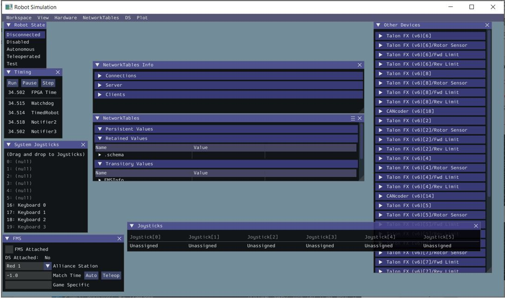Advantage Scope
Driving a robot in the simulator would be pretty lame if all you could see was the data (X,Y,Theta) of the robot moving to a different position on the field. To solve this, we will be using Advantage Scope to display the competition field and watch the virtual robot move across the filed in response to joystick movements.
Note
To execute this example on your local computer you will need an Xbox controller plugged into the USB port on your computer.
Lab - Example Code
This lab has a number of goals:
Clone a Github repository on your laptop
Compile a robot program
Deploy a robot program to the simulator
Connect Advantage Scope to the simulator to see the robot move
Operate the virtual robot from your laptop.
Complete the Lab Steps
Note
For your first Lab, I will guide you through the steps, next time you need to do it. :-)
- Clone the *ProgTrain1* respository from the team Github Website
In a browser, navigate to <team repository>/ProgTrain1
Go to the ProgTrain1 respository.
Click on the green Code Button.
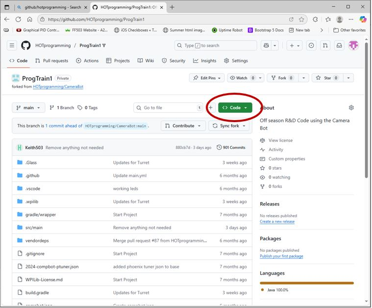Make sure the tab is on HTTPS, then click the copy to clip board button
- Clone the repository on your local machine
Open a command window
Change directory to your project directory: Enter the following:
cd c:/Projects git clone ***<paste in the url>***
Open Visual Studio Code
Important
Make sure that you use the VS Code with 2025 WPILib plugin!!!
In VS Code, Open folder c:/project/ProgTrain1 (under File go to Open Folder)
Note
If you receive a VS Code message asking if you trust the authors, you should click Yes - you trust the authors!!!
Find the WPI Plugin Icon and click it to open the menu:
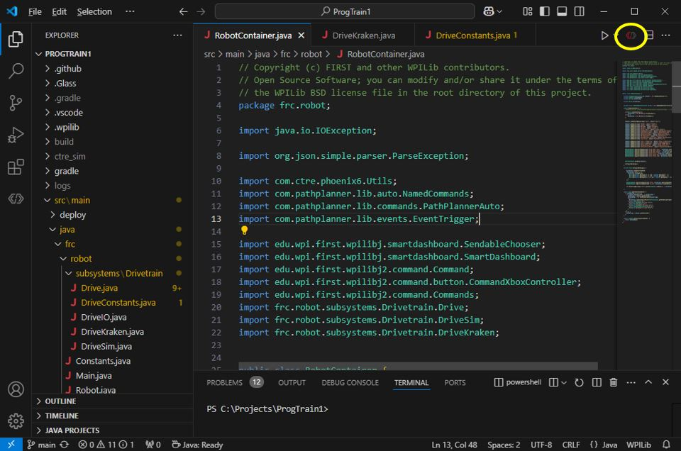In the WPILib menu, navigate to Simulate Robot Code item and select it:
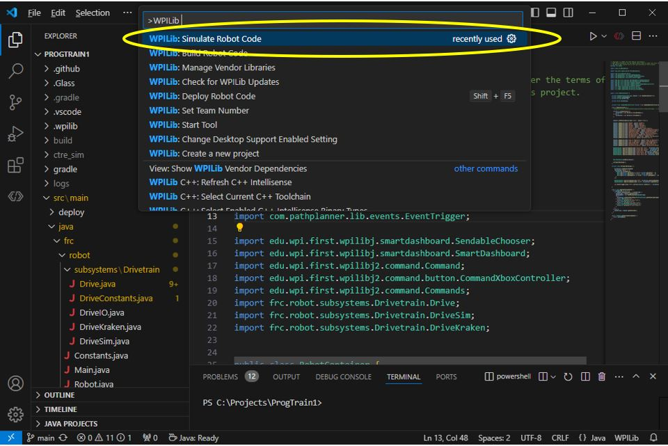The compiler will compile your code and when complete will display which extension to use in simulation. Make sure that the Sim GUI checkbox is checked.
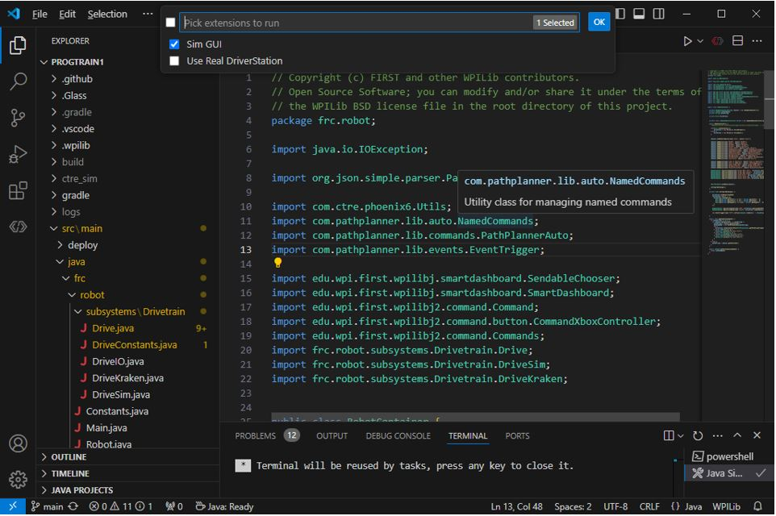When the Simulation has started you should see a screen similar to this:
Now that the simulator is up and running, it is time to start Advantage Scope. In the windows search bar, key in AdvantageScope, and then open it when Windows finds it:
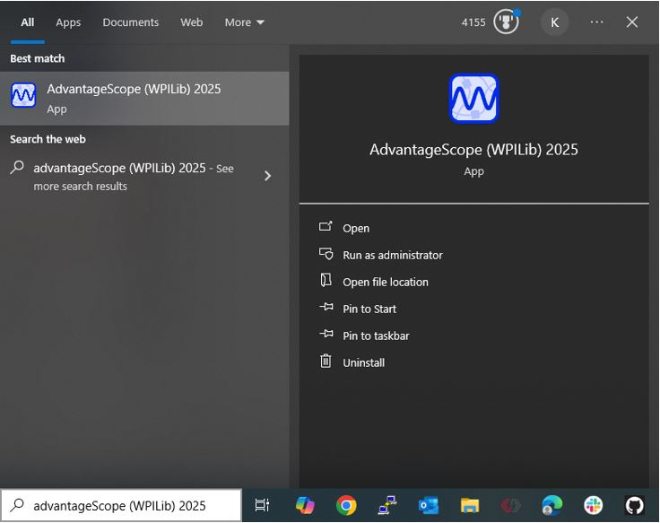
Important
If you have multiple versions of Advantage Scope installed on your machine, make sure that you select the 2025 version. This ensures that you get the correct field displayed in your simulation.
When Advantage Scope opens it will display the 2025 field like this:
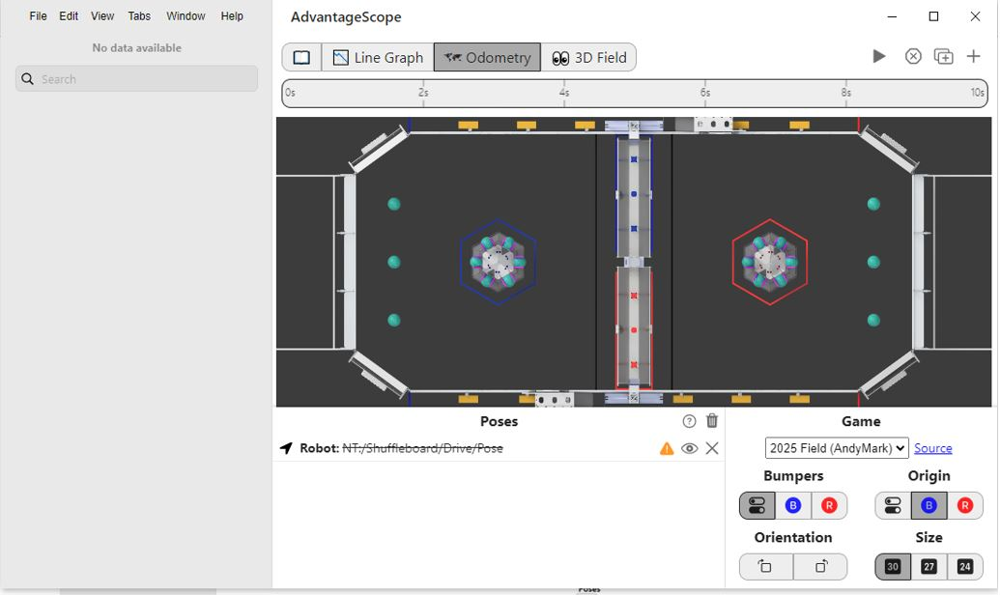
Note
If you do not see the field like the image above, please ensure you are on the odometry tab. Advantage Scope tries to be helpful and will startup on the last screen that was used. This screen may not be the odometery screen, simply click on the tab.
Click on File on the menu bar to display the dropdown menu:
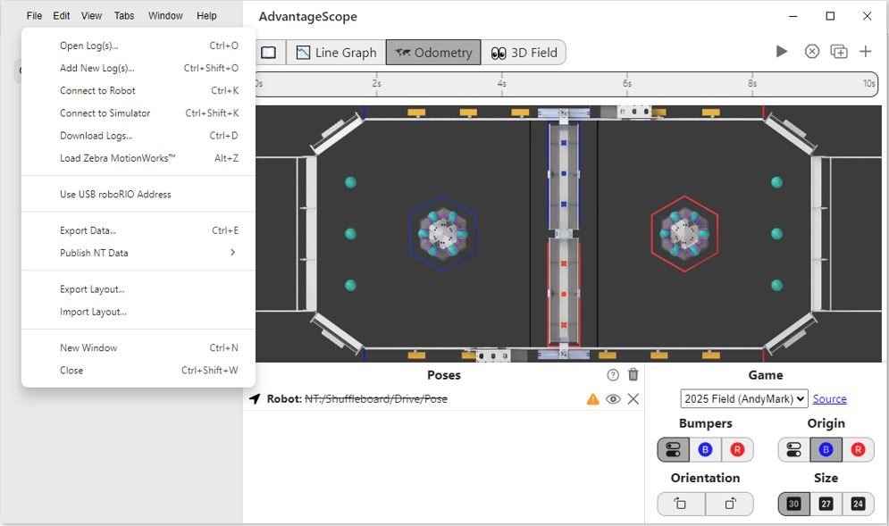Select Connect to Simulator from the drop down menu:
Once Advantage Scope connects to the simulator, it will display all the folders in Network Tables:
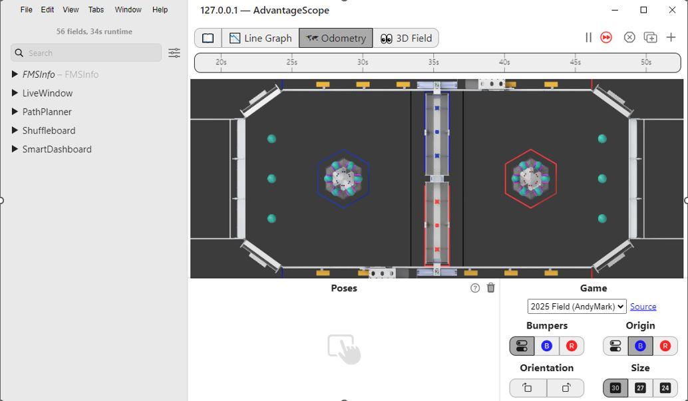Open the Shuffleoard dropdown.
Then open the Drive Dropdown.
Then Open the Pose Dropdown.
You should see a screen similar to the following:
Drag the Pose entry and drop it on the Poses Area. The robot will appear on the field similar to the following:
Go back to the Robot Simulator Screen. You should see:
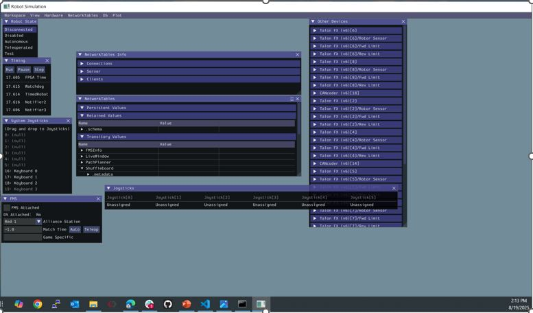Now lets connect your joysitck to the simulation.
Plug in your Joystick onto a USB port on your computer.
Find the System Joysticks on the simulator window. This displays the available joysticks plugged into your computer.
Drag the Xbox Controller from the System Joysticks window to the Joysticks window. This connects your joystick to the simulation.
Click on the Teleoperated in Robot State.
If you move the joysticks on the controller you should see your robot move on the Advantage Scope window. Enjoy!!!!
Operating the Simulated Robot
You will be operating a swerve drive robot which requires two joysticks.
The left joystick controls direction and speed. The simulation is in Field Oriented mode. Which means pushing the joystick forward makes the robot go down the field from the blue side to the red side. Pulling back on the joystick makes the robot travel in the opposite direction. Pushing the left joystick from side to side will make the robot go from side to side on the field.
The right joystick is to control spin. It rotates the robot 360 degrees either to the left or to the right. This is to allow the robot to spin while moving a specific direction.
It is not as simple as it looks. That’s why the drive team needs to practice to be able to drive the robot efficiently.
Note
The arrow on the robot points to front.
Important
Please notice where your robot is on the field. The robot starts out on the lower right hand side of the blue side of the field. If your robot travels off the field, it is really hard to get it back. You might want to restart the simulation to get your robot back on the field, if you lose it.
References
FRC Documentation - Robot Simulator